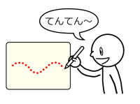

 オノマトペを声に出しながら線を引くことで、そのオノマトペに応じた質感で線を描けるインタフェースです。 例えば「モコモコ〜」と言いながら線を引くと、モコモコした線を描くことができます。
オノマトペに応じて以下のようなブラシで線を描くことができます。
また、コピー＆ペーストのような編集操作や、
写真の変形といった画像加工にもオノマトペを使います。
| ブラシ | 編集・画像加工 |
|---|---|
|
|
|
音声認識にはオープンソースの音声認識エンジンJuliusを使っています。
Julius用認識文法を作成することで、「ギザギザ」といったオノマトペだけを認識しています。
また、Juliusをモジュールモード (サーバーモード) で動かすことで、
クライアントのペイントソフトにTCP/IP経由で音声認識結果を送っています。
オノマトペンの技術・操作方法を応用して、オノマトペを声に出すことで操作するゲーム：オノマトゲー「忍者オノマトくん」を作りました。
Windows版のみ
Windows版 + Linux版
ソースコード（github.com）